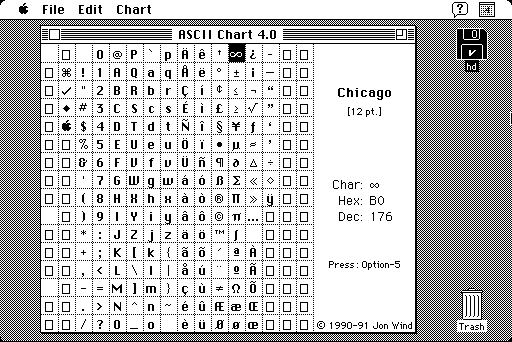

Download
asciichart4.0.zip (49K) The ASCII Chart 4.0 repackaged into a zipped hfs disk image and checksum file. The disk image can be mounted with Mini vMac.
asciichart4.0.sit.hqx (94K) The ASCII Chart 4.0 in the original format.
copyright: Jon Wind
mod date: Jun 4, 1991
license: Freeware
A Desk Accessory "which makes it easy to see all characters in a font at a glance", and tells you how to type those characters. Also shows "a character's hexadecimal and decimal value" and can "send font samples to a file or printer."

If you find these downloads useful, please consider helping the Gryphel Project, which hosts them.
Here are the md5 checksums for the downloads, signed with Gryphel Key 5:
--------- GRY SIGNED TEXT --------- 2245d741c082029b6985ea992041a423 asciichart4.0.zip b3e8dcfedb9057a9b61ef6e918c74c2b asciichart4.0.sit.hqx ------- BEGIN GRY SIGNATURE ------- Gry/4Xa8CFcUzxdN/FboNdgwJGiJZjrm9X8GfKBmNiUVqIhq4PaE9up4AGXwTBs5 CGPw+wewyXodtyFTQLPwFETVTjGqyrEm1TxHZ7RR4hps6z3+gOuO83R8VfjofQdU zsHrs1XWN5x3h/MdhpzTdKvqhWY/RR1ZlD7euQhMfl5Zm2YksGNMgWEOoUt0AnBO -------- END GRY SIGNATURE --------